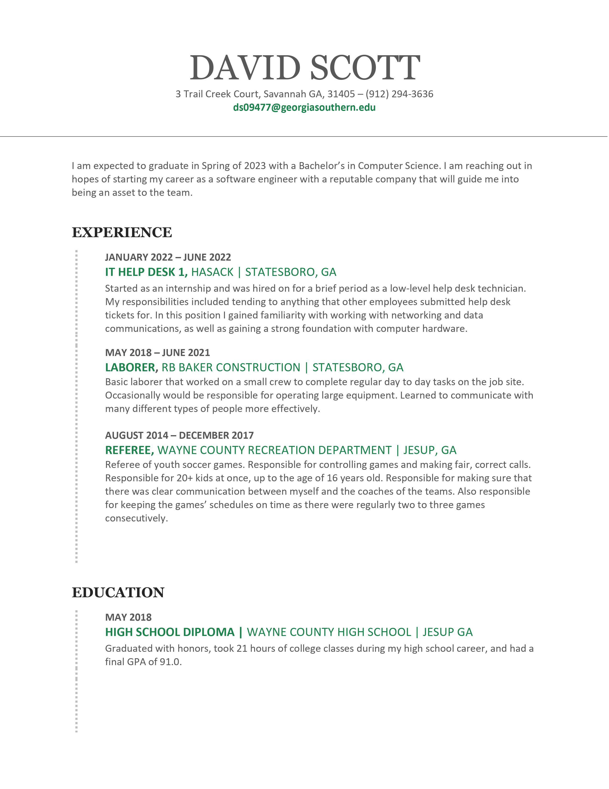
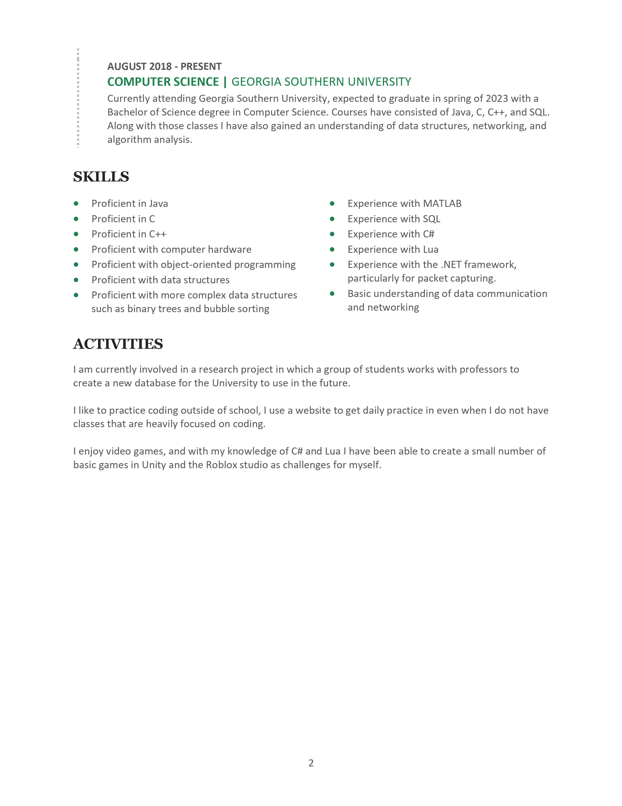

About Me
My name is David Scott. I am a senior at Georgia Southern University pursuing a bachelor's degree in computer science. During my time in school I have worked with a handful of different programming languages that have taught me how writing code works. I have gained a strong understanding of using Java, C, C++, and SQL. Though these are the languages I have used in school, I have also used other languages outside of school such as Lua, MATLAB, and C#. I also have experience with data structures, algorithm analysis, and the software development lifecycle. I am a highly creative person who is eager and open to learn more in any niche I find myself in. I am a fast learner who can quickly figure out problems that I come across. I am a hard worker that will do whatever needs to be done to complete a task in a timely and professional manner. With the skills I have obtained I am confident I will be a valuable asset to your team. This web-page is to display my knowledge of programming and dedication to becoming a well versed software developer. Here you will find my resume, contact information, and a few projects that I have worked on in the past.
My LinkedIn can be found
here
For security reasons, you may not want to click any links found here, so I have attached my resume here. You can also find information on some of my projects by clicking the projects tab at the top of the page.

